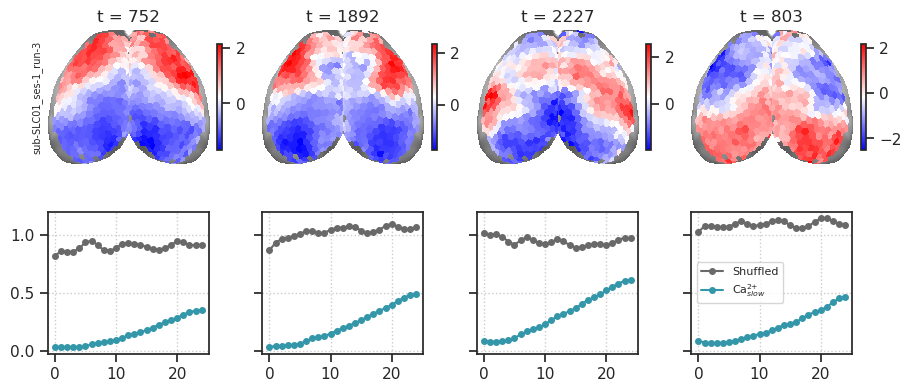
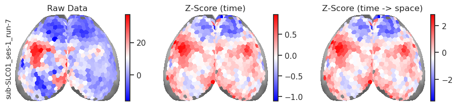
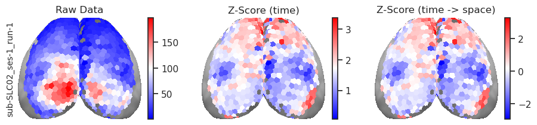
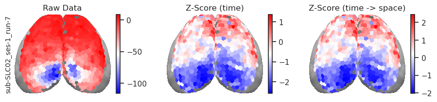
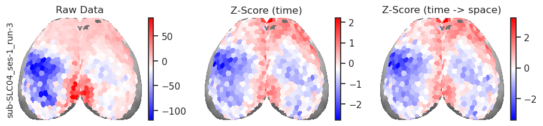
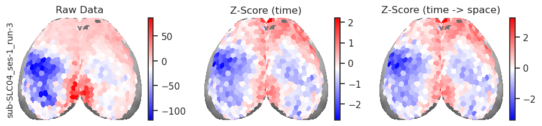
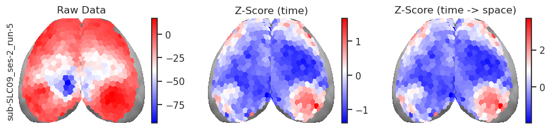
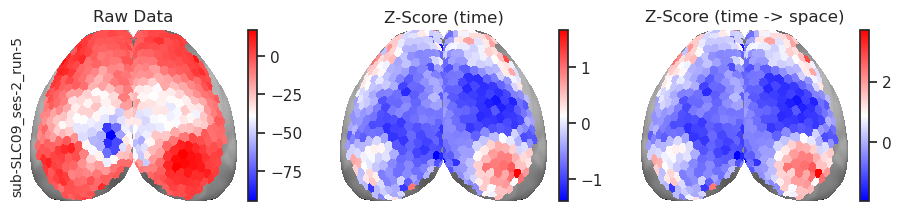
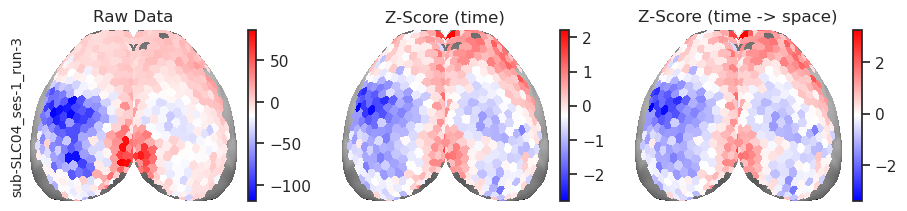
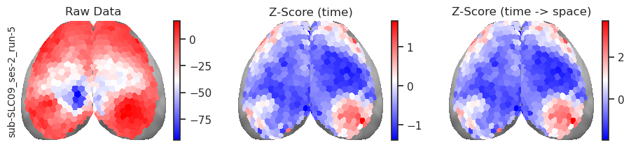

(28) Variograms – Raw Data#
Motivation: Plot raw data variograms using BrainSMASH code (average across time).
# HIDE CODE
import os, sys
from IPython.display import display, Latex
# tmp & extras dir
git_dir = os.path.join(os.environ['HOME'], 'Dropbox/git')
extras_dir = os.path.join(git_dir, 'jb-Ca-fMRI/_extras')
fig_base_dir = os.path.join(git_dir, 'jb-Ca-fMRI/figs')
tmp_dir = os.path.join(git_dir, 'jb-Ca-fMRI/tmp')
# GitHub
sys.path.insert(0, os.path.join(git_dir, '_Ca-fMRI'))
from figures.fighelper import *
from analysis.final import *
from utils.render import *
# warnings, tqdm, & style
warnings.filterwarnings('ignore', category=DeprecationWarning)
from tqdm.notebook import tqdm
%matplotlib inline
set_style()
# HIDE CODE
def default_props_anesth(
num_k: int = 7,
perc: int = 15,
**kwargs, ):
mice = Mice(512)
mice.set_kws(
desc_ca2='preproc',
desc_bold='rabies-hp',
)
props_base = {
'mice': mice,
'num_k': num_k,
'task': 'rest',
'perc': f'p{perc}-sample',
'metric': 'pearson',
'sv_props': {
'match_using': 'gam',
'match_metric': 'euclidean'},
'graph_type': 'real',
'kw_kmeans': {'n_init': 100},
'verbose': False,
}
kwargs = setup_kwargs(props_base, kwargs)
props_ca = {'mode': 'ca2', **kwargs}
return mice, props_ca
Prep#
mice = Mice(512)
mice.setup_func_data()
print(mice.kws)
bs = Base(mice, mode='ca2')
kws_show = show_kws(7)
bands = {
(0.0, 5.0): 'Unfiltered',
(0.01, 5.0): 'HP',
(0.01, 0.5): CAS,
(0.5, 5.0): CAF,
}
pal = prepare_palette()
translation = {'BOLD': BOLD, 'CAS': CAS, 'CAF': CAF}
fig_dir = pjoin(fig_base_dir, 'rebuttal')
print(fig_dir)
{ 'task': 'rest', 'exclude': True, 'runs_only': True, 'band_ca2': (0.01, 5.0), 'band_bold': (0.01, 0.5), 'desc_ca2': 'preproc', 'desc_bold': 'rabies-hp' }
/home/hadi/Dropbox/git/jb-Ca-fMRI/figs/rebuttal
Variogram#
distances_left = np.load(
pjoin(tmp_dir, 'euclidean_dists_left_hemis.npy'),
allow_pickle=True,
).item()
d_square = np.zeros((len(bs.l_idxs),) * 2)
for (src, tgt), d in distances_left.items():
d_square[bs.id2n[src], bs.id2n[tgt]] = d
d_square += d_square.T
d_square /= 100
plt.imshow(d_square)
plt.colorbar();
dr = np.load(
pjoin(tmp_dir, 'degree_ranks.npy'),
allow_pickle=True,
).item()
{k: (np.nanmin(v), np.nanmax(v)) for k, v in dr.items()}
{ 'BOLD': (0.21269394878330333, 0.7681680279339376), 'CAS': (0.07455426045514849, 0.9319673110142711), 'CAF': (0.009846819005735, 0.964751401485692) }
bs.show(
dr, vmin=0, vmax=0.9, figsize=(2, 4),
label_fontsize=12, label_pad=7,
cmap='coolwarm', cbar=False,
);
BrainSMASH#
sys.path.insert(0, os.path.join(git_dir, 'brainsmash'))
from brainsmash.mapgen.base import Base as Brainsmash_BS
gamma = {}
for k, d in dr.items():
x = d[bs.l_idxs]
good = ~np.isnan(x)
x = x[good]
base = Brainsmash_BS(x, d_square[good][:, good])
gamma[k] = base.compute_smooth_variogram(x)
fig, ax = create_figure(1, 1, (6.0, 3.0), sharey='all', layout='constrained')
for i, mode in enumerate(gamma):
ax.plot(
base.h,
gamma[mode],
color=pal[translation[mode]],
label=translation[mode],
marker='o',
lw=1,
)
ax.legend()
ax.set_ylabel(r'$\gamma$', fontsize=15)
ax.set_xlabel('Distance (mm)')
move_legend(ax, (1., 1.03))
ax.grid()
fig.savefig(
pjoin(fig_dir, f"variogram_brainsmash_degree.pdf"),
bbox_inches='tight',
)
plt.show()
Raw data#
def _fit_gamma(data, seed=0, verbose=False, shuffle=False):
gamma = []
for t in tqdm(range(data.shape[1]), disable=not verbose):
x = data[bs.l_idxs, t]
good = ~np.isnan(x)
if not good.sum():
continue
x = x[good]
if shuffle:
rng = get_rng(seed)
rng.shuffle(x)
base = Brainsmash_BS(x, d_square[good][:, good], seed=seed)
gamma.append(base.compute_smooth_variogram(x))
gamma = np.stack(gamma)
return gamma
def _normalize_space_time(data):
data = sp_stats.zscore(data, axis=1)
mu = np.nanmean(data, axis=0, keepdims=True)
sd = np.nanstd(data, axis=0, keepdims=True)
data = (data - mu) / sd
return data
key = 'sub-SLC01_ses-1_run-3'
data = Base(mice, key=key, mode='bold-lite', prep_data=True)
data = _normalize_space_time(data.data)
# data = sp_stats.zscore(data.data, axis=1)
data.shape
(540, 477)
gamma_shuffled = _fit_gamma(data, shuffle=True)
gamma_raw = _fit_gamma(data)
gamma_shuffled.shape, gamma_raw.shape
((477, 25), (477, 25))
mu = gamma_shuffled.mean(0)
sd = gamma_shuffled.std(0)
plt.plot(base.h, mu, color='dimgrey', marker='o', label='shuffled')
plt.fill_between(base.h, mu - sd, mu + sd, color='dimgrey', alpha=0.2)
mu = gamma_raw.mean(0)
sd = gamma_raw.std(0)
plt.plot(base.h, mu, color=pal[BOLD], marker='o', label=BOLD)
plt.fill_between(base.h, mu - sd, mu + sd, color=pal[BOLD], alpha=0.2)
plt.grid()
plt.legend(loc='lower right')
plt.show()
mice.set_kws(band_ca2=(0.01, 0.5))
data = Base(mice, key=key, mode='ca2', prep_data=True)
data = _normalize_space_time(data.data)
data.shape
(540, 4420)
gamma_shuffled = _fit_gamma(data, shuffle=True)
gamma_raw = _fit_gamma(data)
gamma_shuffled.shape, gamma_raw.shape
((4420, 25), (4420, 25))
mu = gamma_shuffled.mean(0)
sd = gamma_shuffled.std(0)
plt.plot(base.h, mu, color='dimgrey', marker='o', label='shuffled')
plt.fill_between(base.h, mu - sd, mu + sd, color='dimgrey', alpha=0.2)
mu = gamma_raw.mean(0)
sd = gamma_raw.std(0)
plt.plot(base.h, mu, color=pal[CAS], marker='o', label=CAS)
plt.fill_between(base.h, mu - sd, mu + sd, color=pal[CAS], alpha=0.2)
plt.grid()
plt.legend(loc='lower right')
plt.show()
t = 1200
bs.show(
data[:, t],
figsize=(3, 2),
vmin=np.nanmin(data[:, t]),
vmax=np.nanmax(data[:, t]),
cmap='bwr',
cbar=True,
);
plt.plot(base.h, gamma_shuffled[t], color='dimgrey', marker='o', label='shuffled')
plt.plot(base.h, gamma_raw[t], color=pal[CAS], marker='o', label=CAS)
plt.legend(loc='lower right')
plt.grid()
plt.show()
plt.plot(base.h, gamma_raw.T);
ids = np.argsort(gamma_raw[:, 0])
time_ids = [ids[i] for i in [0, 1, 160, 170]]
x2p = [data[:, t] for t in time_ids]
x2p += [np.isfinite(x2p[0])]
x2p = np.stack(x2p)
x2p, top = bs.trim2d(bs.project_vec(x2p))
fig, axes = create_figure(2, 4, (9.0, 4.0), sharey='row', layout='constrained', height_ratios=[1.5, 1])
for i, t in enumerate(time_ids):
ax = axes[0, i]
ax.set_title(f't = {t}')
ax.imshow(mwh(top == 0, top), cmap='Greys_r')
im = ax.imshow(mwh(~x2p[-1].astype(bool), x2p[i]), cmap='bwr')
plt.colorbar(im, ax=ax, shrink=0.5)
ax = axes[1, i]
ax.plot(gamma_shuffled[t], marker='o', markersize=4, color='dimgrey', label='Shuffled')
ax.plot(gamma_raw[t], marker='o', markersize=4, color=pal[CAS], label=CAS)
if i == 3:
ax.legend(fontsize=8)
ax.grid()
axes[0, 0].set_ylabel(key, fontsize=7)
remove_ticks(axes[0])
plt.show()

time_ids = [ids[i] for i in [-1, -2, -6, -4]]
x2p = [data[:, t] for t in time_ids]
x2p += [np.isfinite(x2p[0])]
x2p = np.stack(x2p)
x2p, top = bs.trim2d(bs.project_vec(x2p))
fig, axes = create_figure(2, 4, (9.0, 4.0), sharey='row', layout='constrained', height_ratios=[1.5, 1])
for i, t in enumerate(time_ids):
ax = axes[0, i]
ax.set_title(f't = {t}')
ax.imshow(mwh(top == 0, top), cmap='Greys_r')
im = ax.imshow(mwh(~x2p[-1].astype(bool), x2p[i]), cmap='bwr')
plt.colorbar(im, ax=ax, shrink=0.5)
ax = axes[1, i]
ax.plot(gamma_shuffled[t], marker='o', markersize=4, color='dimgrey', label='Shuffled')
ax.plot(gamma_raw[t], marker='o', markersize=4, color=pal[CAS], label=CAS)
if i == 1:
ax.legend(fontsize=8)
ax.grid()
axes[0, 0].set_ylabel(key, fontsize=7)
remove_ticks(axes[0])
plt.show()
scale = 50
fig, axes = create_figure(1, 4, (9, 2.4), sharey='all', layout='constrained')
for i, lim in enumerate([0.6, 1, 2, 9]):
ax = axes[i]
ax.set_xlabel('Distance (mm)')
bins = np.linspace(0, lim, int(np.round(lim * scale + 1)))
bins -= 1 / scale / 2
sns.histplot(
sp_dist.squareform(d_square),
color='black',
bins=bins,
ax=ax,
)
ax.axvline(min(base.h), color='red', ls='--', lw=1.2)
if i > 1:
ax.axvline(max(base.h), color='red', ls='--', lw=1.2)
scale = 100
fig, axes = create_figure(1, 3, (9, 2), sharey='all', layout='constrained')
for i, lim in enumerate([1, 2, 9]):
ax = axes[i]
ax.set_xlabel('Distance (mm)')
bins = np.linspace(0, lim, lim * scale + 1)
bins -= 1 / scale / 2
sns.histplot(
sp_dist.squareform(d_square),
color='black',
bins=bins,
ax=ax,
)
ax.axvline(min(base.h), color='red', ls='--', lw=1.2)
if i > 0:
ax.axvline(max(base.h), color='red', ls='--', lw=1.2)
ax.set_yscale('log')
i = 21
x2p = np.mean(data[:, ids[i * 100: (i + 1) * 100]], -1)
bs.show(
x2p,
figsize=(3, 2),
vmin=np.nanmin(x2p),
vmax=np.nanmax(x2p),
cmap='bwr',
cbar=True,
);
props = {
'mice': mice,
'mode': 'bold-lite',
'task': 'rest',
'prep_data': True,
}
kws = {
'task': task,
f"band_{bold-lite}": b,
f"desc_{args.mode}": args.desc,
}
mice.setup_func_data(**kws)
key
'sub-SLC01_ses-1_run-3'
net = Network(key=key, **props)
net.name()
'n-512*3_pearson_rest_bold-lite-rabies-hp_bp(0.01,0.5)_sub-SLC01_ses-1_run-3'
mode = 'ca2'
desc = 'sigma1.0'
kws = {f"desc_{mode}": desc}
mice.setup_preproc_data(**kws)
f = mice.ca_preproc['sub-SLC10_ses-3_run-7']
vars(f)
{ 'cfg': <model.configuration.Config object at 0x7f186c050400>, '_patterns': [ '_desc-sigma1.0_', 'ca2', 'run-7', 'ses-3', 'space-individual', 'sub-SLC10' ], 'key': 'sub-SLC10_ses-3_run-7', 'mode': 'ca2', 'space': 'individual', 'npy_dir': None, 'nii_file': None, 'npy_file': None, 'dtype': <class 'float'>, '_npy': None, 'shape': None, 'task': None }
f.nii_file
Smoothened Ca data#
proj = bs.trim2d(bs.project_vec(data[:, t]))[0][0]
x = sp_img.gaussian_filter(proj, sigma=5)
plt.imshow(mwh(x == 0, x))
<matplotlib.image.AxesImage object at 0x7f155b650c40>
mice.setup_preproc_data()
img = mice.ca_preproc[key].load_ants()
raw = img.numpy()[..., 0, :]
mask = np.mean(np.abs(raw), -1) > 0
gs = raw[mask].mean(0)
plt.plot(gs)
plt.axvline(500, color='k')
<matplotlib.lines.Line2D object at 0x7f155b110490>
snr = np.mean(raw, -1) / np.std(raw, -1)
plt.imshow(np.std(raw, -1))
<matplotlib.image.AxesImage object at 0x7f155b1b80d0>
plt.imshow(raw[..., 1900]);
raw_zs = sp_stats.zscore(raw, -1)
plt.imshow(raw_zs[..., 1600]);
Plot sample timepoints#
mice.set_kws(band_ca2=(0.01, 0.5))
t = 1200
for key in mice.ca:
data = Base(mice, key=key, mode='ca2', prep_data=True)
# data = _normalize_space_time(data.data)
data = data.data
data_zt = sp_stats.zscore(data, axis=1)
data_zst = _normalize_space_time(data)
x2p = np.stack([
data[:, t],
data_zt[:, t],
data_zst[:, t],
np.isfinite(data[:, t]),
])
x2p, top = bs.trim2d(bs.project_vec(x2p))
fig, axes = create_figure(1, 3, (9.0, 2.0), 'all', 'all', 'constrained')
for i, ax in enumerate(axes.flat):
ax.imshow(mwh(top == 0, top), cmap='Greys_r')
im = ax.imshow(mwh(~x2p[-1].astype(bool), x2p[i]), cmap='bwr')
plt.colorbar(im, ax=ax)
axes[0].set_ylabel(key, fontsize=10)
axes[0].set_title('Raw Data')
axes[1].set_title('Z-Score (time)')
axes[2].set_title('Z-Score (time -> space)')
remove_ticks(axes)
plt.show()




 


 



plt.imshow(x2p[2])
<matplotlib.image.AxesImage object at 0x7f1563a12310>
mu, sd = {}, {}
data = Base(mice, key=key, mode='bold-lite', prep_data=True)
gamma_raw = _fit_gamma(_normalize_space_time(data.data))
mu['BOLD'] = gamma_raw.mean(0)
sd['BOLD'] = gamma_raw.std(0)
mice.set_kws(band_ca2=(0.01, 0.5))
data = Base(mice, key=key, mode='ca2', prep_data=True)
gamma_raw = _fit_gamma(_normalize_space_time(data.data))
mu['CAS'] = gamma_raw.mean(0)
sd['CAS'] = gamma_raw.std(0)
mice.set_kws(band_ca2=0.5)
data = Base(mice, key=key, mode='ca2', prep_data=True)
gamma_raw = _fit_gamma(_normalize_space_time(data.data))
mu['CAF'] = gamma_raw.mean(0)
sd['CAF'] = gamma_raw.std(0)
fig, ax = create_figure(1, 1, (6.0, 3.0), sharey='all', layout='constrained')
for i, mode in enumerate(mu):
ax.plot(
base.h / 100,
mu[mode],
color=pal[translation[mode]],
label=translation[mode],
marker='o',
lw=1,
)
ax.grid()
ax.legend()
move_legend(ax, (1., 1.03))
ax.set_xlabel('Distance (mm)')
ax.set_ylabel(r'$\gamma$', fontsize=15)
plt.show()
keys_both = sorted(set(mice.bold).intersection(mice.ca))
len(keys_both)
109
Do all runs#
mu = collections.defaultdict(dict)
sd = collections.defaultdict(dict)
for key in tqdm(keys_both):
data = Base(mice, key=key, mode='bold-lite', prep_data=True)
gamma_raw = _fit_gamma(_normalize_space_time(data.data))
mu['BOLD'][key] = gamma_raw.mean(0)
sd['BOLD'][key] = gamma_raw.std(0)
mice.set_kws(band_ca2=(0.01, 0.5))
data = Base(mice, key=key, mode='ca2', prep_data=True)
gamma_raw = _fit_gamma(_normalize_space_time(data.data))
mu['CAS'][key] = gamma_raw.mean(0)
sd['CAS'][key] = gamma_raw.std(0)
mice.set_kws(band_ca2=0.5)
data = Base(mice, key=key, mode='ca2', prep_data=True)
gamma_raw = _fit_gamma(_normalize_space_time(data.data))
mu['CAF'][key] = gamma_raw.mean(0)
sd['CAF'][key] = gamma_raw.std(0)
fig, ax = create_figure(1, 1, (6.5, 3.1), sharey='all', layout='constrained')
for i, (mode, d) in enumerate(mu.items()):
x = np.stack(list(d.values()))
ax.plot(
base.h / 100,
np.mean(x, 0),
color=pal[translation[mode]],
label=translation[mode],
marker='o',
lw=1,
)
ax.fill_between(
x=base.h / 100,
y1=np.mean(x, 0) - np.std(x, 0),
y2=np.mean(x, 0) + np.std(x, 0),
color=pal[translation[mode]],
alpha=0.2,
)
ax.grid()
ax.legend()
move_legend(ax, (1., 1.03))
ax.set_xlabel('Distance (mm)')
ax.set_ylabel(r'$\gamma$', fontsize=15)
plt.show()
mice.set_kws(band_ca2=(0.01, 0.5))
data = Base(mice, key=key, mode='ca2', prep_data=True)
data = _normalize_space_time(data.data)
t = 1200
bs.show(
data[:, t],
figsize=(3, 2),
vmin=np.nanmin(data[:, t]),
vmax=np.nanmax(data[:, t]),
cmap='bwr',
cbar=True,
);
t = 1300
bs.show(
data[:, t],
figsize=(3, 2),
vmin=np.nanmin(data[:, t]),
vmax=np.nanmax(data[:, t]),
cmap='bwr',
cbar=True,
);

key = 'sub-SLC02_ses-1_run-1'
data = Base(mice, key=key, mode='bold-lite', prep_data=True)
data = data.data
# data = _normalize_space_time(data.data)
t = 120
bs.show(
data[:, t],
figsize=(3, 2),
vmin=np.nanmin(data[:, t]),
vmax=np.nanmax(data[:, t]),
mask_thresh=None,
cmap='bwr',
cbar=True,
);
len(data) - np.isnan(data[:, t]).sum()
506
for key in mice.bold:
data = Base(
mice,
key=key,
mode='bold-lite',
prep_data=True,
).data
bad = np.isnan(data).sum(1) > 0
print(bad.sum(), key)
19 sub-SLC01_ses-1_run-1
19 sub-SLC01_ses-1_run-3
22 sub-SLC01_ses-1_run-5
19 sub-SLC01_ses-1_run-7
8 sub-SLC01_ses-2_run-1
8 sub-SLC01_ses-2_run-3
8 sub-SLC01_ses-2_run-5
8 sub-SLC01_ses-2_run-7
12 sub-SLC01_ses-3_run-1
12 sub-SLC01_ses-3_run-3
12 sub-SLC01_ses-3_run-5
12 sub-SLC01_ses-3_run-7
34 sub-SLC02_ses-1_run-1
34 sub-SLC02_ses-1_run-3
34 sub-SLC02_ses-1_run-5
34 sub-SLC02_ses-1_run-7
10 sub-SLC02_ses-2_run-1
10 sub-SLC02_ses-2_run-3
10 sub-SLC02_ses-2_run-5
17 sub-SLC02_ses-3_run-1
17 sub-SLC02_ses-3_run-3
17 sub-SLC02_ses-3_run-5
17 sub-SLC02_ses-3_run-7
20 sub-SLC03_ses-1_run-2
20 sub-SLC03_ses-1_run-4
20 sub-SLC03_ses-1_run-6
7 sub-SLC03_ses-2_run-1
7 sub-SLC03_ses-2_run-3
7 sub-SLC03_ses-2_run-5
7 sub-SLC03_ses-2_run-7
17 sub-SLC03_ses-3_run-1
16 sub-SLC03_ses-3_run-3
16 sub-SLC03_ses-3_run-5
16 sub-SLC03_ses-3_run-7
11 sub-SLC04_ses-1_run-1
11 sub-SLC04_ses-1_run-3
11 sub-SLC04_ses-1_run-5
11 sub-SLC04_ses-1_run-7
6 sub-SLC04_ses-2_run-1
6 sub-SLC04_ses-2_run-3
6 sub-SLC04_ses-2_run-5
7 sub-SLC04_ses-2_run-7
20 sub-SLC04_ses-3_run-1
20 sub-SLC04_ses-3_run-3
20 sub-SLC04_ses-3_run-5
20 sub-SLC04_ses-3_run-7
12 sub-SLC05_ses-1_run-1
12 sub-SLC05_ses-1_run-3
12 sub-SLC05_ses-1_run-7
5 sub-SLC05_ses-2_run-1
4 sub-SLC05_ses-2_run-3
4 sub-SLC05_ses-2_run-5
4 sub-SLC05_ses-2_run-7
16 sub-SLC05_ses-3_run-1
16 sub-SLC05_ses-3_run-3
16 sub-SLC05_ses-3_run-5
16 sub-SLC05_ses-3_run-7
30 sub-SLC06_ses-1_run-1
29 sub-SLC06_ses-1_run-3
30 sub-SLC06_ses-1_run-5
31 sub-SLC06_ses-1_run-7
11 sub-SLC06_ses-2_run-1
11 sub-SLC06_ses-2_run-3
11 sub-SLC06_ses-2_run-5
11 sub-SLC06_ses-2_run-7
26 sub-SLC06_ses-3_run-1
23 sub-SLC06_ses-3_run-3
26 sub-SLC06_ses-3_run-5
22 sub-SLC06_ses-3_run-7
41 sub-SLC07_ses-1_run-1
46 sub-SLC07_ses-1_run-3
42 sub-SLC07_ses-1_run-5
41 sub-SLC07_ses-1_run-7
9 sub-SLC07_ses-2_run-3
9 sub-SLC07_ses-2_run-5
9 sub-SLC07_ses-2_run-7
25 sub-SLC07_ses-3_run-1
25 sub-SLC07_ses-3_run-3
25 sub-SLC07_ses-3_run-5
25 sub-SLC07_ses-3_run-7
18 sub-SLC08_ses-1_run-1
18 sub-SLC08_ses-1_run-3
27 sub-SLC08_ses-1_run-5
9 sub-SLC08_ses-2_run-1
8 sub-SLC08_ses-2_run-3
8 sub-SLC08_ses-2_run-5
8 sub-SLC08_ses-2_run-7
18 sub-SLC08_ses-3_run-1
18 sub-SLC08_ses-3_run-3
18 sub-SLC08_ses-3_run-5
18 sub-SLC08_ses-3_run-7
11 sub-SLC09_ses-1_run-1
11 sub-SLC09_ses-1_run-3
11 sub-SLC09_ses-1_run-5
11 sub-SLC09_ses-1_run-7
7 sub-SLC09_ses-2_run-1
7 sub-SLC09_ses-2_run-3
7 sub-SLC09_ses-2_run-5
7 sub-SLC09_ses-2_run-7
25 sub-SLC09_ses-3_run-1
25 sub-SLC09_ses-3_run-3
26 sub-SLC09_ses-3_run-5
27 sub-SLC09_ses-3_run-7
21 sub-SLC10_ses-1_run-1
21 sub-SLC10_ses-1_run-3
21 sub-SLC10_ses-1_run-7
4 sub-SLC10_ses-2_run-1
4 sub-SLC10_ses-2_run-3
4 sub-SLC10_ses-2_run-5
4 sub-SLC10_ses-2_run-7
6 sub-SLC10_ses-3_run-1
6 sub-SLC10_ses-3_run-3
5 sub-SLC10_ses-3_run-5
5 sub-SLC10_ses-3_run-7
from register.register import Register
reg = Register(mice)
obj = reg.load_obj_masks('sub-SLC07_ses-1', ['eroded', 'brain'])
{
k: len(unique_idxs(v.numpy()))
for k, v in obj.items()
}
{'eroded': 5732, 'brain': 5732}
{
k: len(set(unique_idxs(v.numpy())).intersection(mice.node_lookup['ca2'].values()))
for k, v in obj.items()
}
{'eroded': 507, 'brain': 507}
obj = reg.load_obj_masks('sub-SLC07_ses-2', ['eroded', 'brain'])
{
k: len(unique_idxs(v.numpy()))
for k, v in obj.items()
}
{'eroded': 5967, 'brain': 5967}
{
k: len(set(unique_idxs(v.numpy())).intersection(mice.node_lookup['ca2'].values()))
for k, v in obj.items()
}
{'eroded': 532, 'brain': 532}
obj = reg.load_obj_masks('sub-SLC07_ses-3', ['eroded', 'brain'])
{
k: len(unique_idxs(v.numpy()))
for k, v in obj.items()
}
{'eroded': 5845, 'brain': 5845}
{
k: len(set(unique_idxs(v.numpy())).intersection(mice.node_lookup['ca2'].values()))
for k, v in obj.items()
}
{'eroded': 519, 'brain': 519}